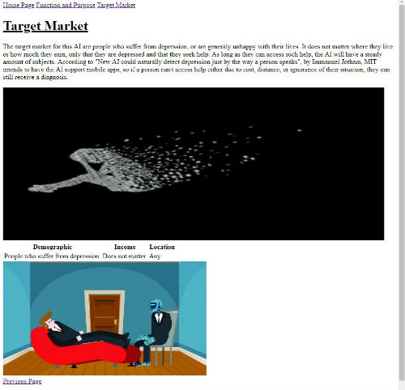
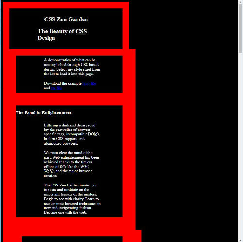

1 / 4

Innovation Web Page
2 / 4

CSS Zen Garden
3 / 4
Career of Choice Essay
4 / 4
Cryptocurrencies Flash Talk
The first website I created this year was an html document that detailed information on technological innovations. My innovation of choice was an artificial intelligence that can more accurately diagnose depression in humans.Before I began coding, I conducted research on how this AI worked. How much it may cost, and who the target demographic is.
My next big project was the CSS Zen Garden challenge. The task was simple, download the provided html file and use CSS to mess with it. By the end of the project, the web page was supposed to be almost unrecognizable.
Discussed the future career that I desired, the outlook of that occupation, and why. The career that I chose is in the field of writing. I employed the habit of investigation in order to fing sufficient sources, as most of them offered little to no accurate information.
Discussed crytocurrencies, how they work, and wh they are good or bad. I personally sided against crytocurrencies. We were also given the choice to discuss autonomous vehicles, but I found cryptocurrencies more interesting. I employed the habit of persistence in order to grasp the concept of cryptocurrencies.